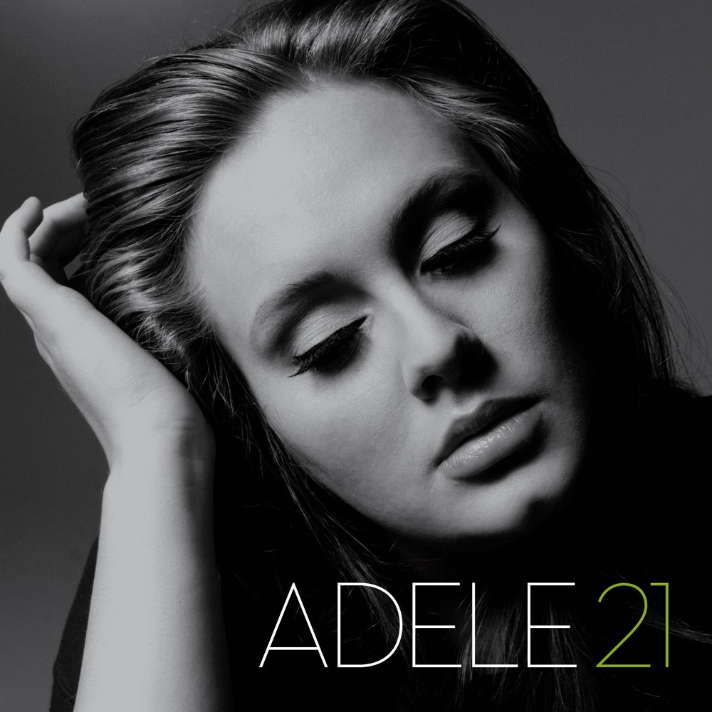

Ton choix : le panneau, la ligne chantée allumée d'un coup, en or, flou au loin. Le vrai 21 d'Adele joue depuis Navidrome (pistes 1, 2 et 11, ⏮ ⏭). Clic sur une ligne : la musique y va ; défiler à la main suspend le suivi. ⌨ L ouvre et ferme, espace = lecture/pause.
